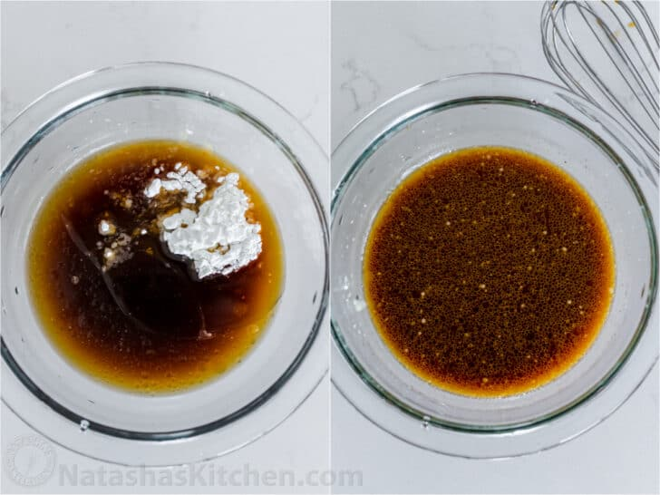
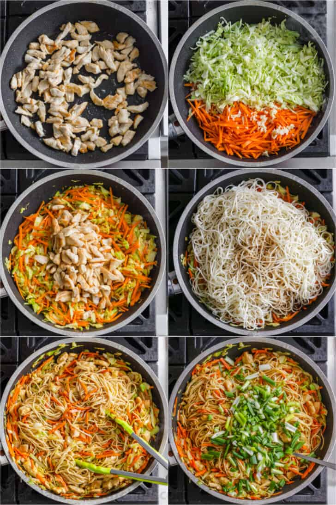

Home Page
Chicken Chow Mein
Chicken Chow Mein pictured
Ingredients:
- Chow Mein Noodles: Chow mein noodles are
made with wheat and egg. They are very similar to Italian
pasta noodles and have a wonderful bite to them.
Most grocery stores carry dry chow mein noodles in the
Asian aisle. But, if you are lucky, you will find pre-cooked
chow mein noodles in the refrigerated section that can be
thrown straight into your pan.
- Vegetables: Carrots, cabbage, green onions,
and bean sprouts are the perfect combination of veggies
to use for chow mein. However, they can easily be
replaced with other veggies like bok choy, celery,
broccoli, spinach, kale or baby corn. Feel free to get
creative and use what you like or whatever you have hanging
around in your fridge!
- Meats: Great quality chicken breasts are
your best bet for slicing into chow mein-ready strips. If
you like, feel free to swap chicken out for beef,
shrimp or pork.
- Chow Mein Sauce: The homemade chow mein
sauce is amazing in this recipe! Combine soy sauce, light
sesame oil, oyster sauce, granulated sugar, cornstarch,
and chicken broth to make the signature sweet and savory
sauce that makes chow mein taste authentic.

Steps:
In a small mixing bowl, combine ingredients for chow mein sauce:
oyster sauce, sesame oil, soy sauce, chicken broth, and
cornstarch. Set aside.
Cook noodles according to package instructions, set aside.
Heat a large wok or pan. Add a bit of oil to the pan and cook
chicken until it's golden brown. Remove chicken and set aside.
Add carrots, cabbage and pressed garlic and saute for a few
minutes until veggies are slightly softened.
Add chicken back to the pan, followed by cooked noodles and
pour the sauce right on top. Cook for about 2 minutes,
distributing all that saucy goodness around evenly.
Add chopped green onions and remove from the heat. Serve hot!

Source